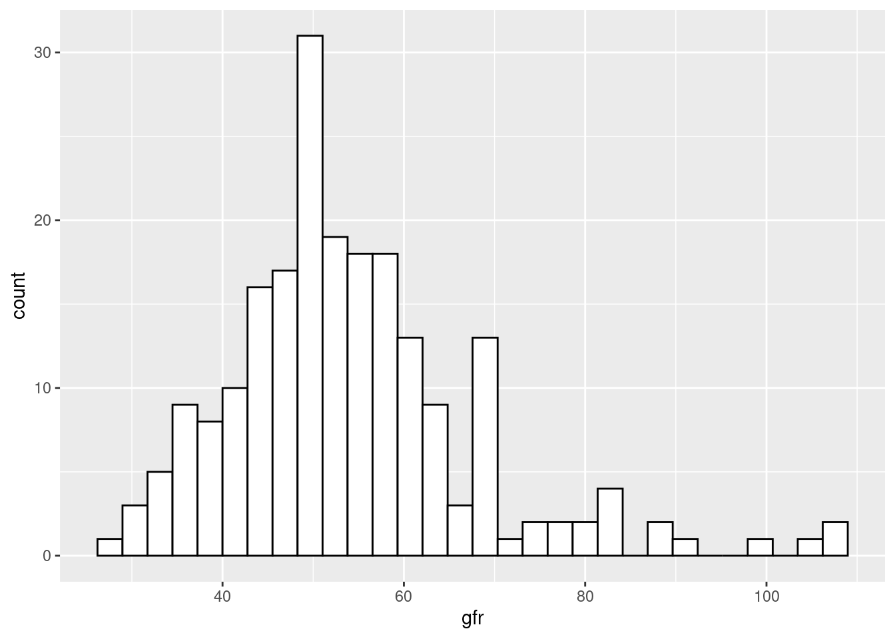
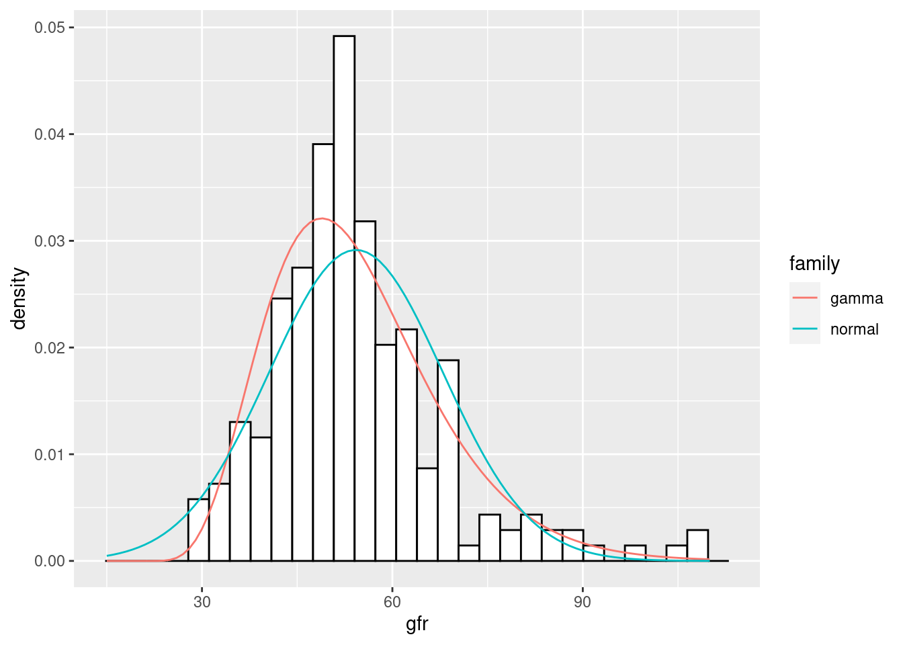

최대 우도 추정(MLE, Maximum Likelihood Estimation)은 관측치 \(x\)가 주어졌을 때 변수 \(\mu\)를 가지는 확률 밀도 함수의 로그 값을 최대로 하는 \(\mu\)를 구하는 방법이다[1].
\(\hat \mu = \text{arg max}_\mu l_x (\mu)\)
여기에서 \(l_x (\mu) = \log f_{\mu} (x)\)이고, \(f_{\mu} (x)\)는 확률 밀도이다.
R에서 EstimationTools 패키지를 이용하여 최대 우도를 추정할 수 있다. 이 글에서는 컴퓨터 시대의 통계적 추론 책의 그림 4.1을 재현하면서 그 패키지의 사용 방법을 정리하기로 하겠다.
신장 사구체의 여과 능력에 대한 측정 데이터가 주어졌다. 총 201개의 데이터로 평균은 54, 표준 편차는 14이며, 히스토그램은 다음에 도시하였다.
library(tidyverse)
library(EstimationTools)
df <- read_csv("https://web.stanford.edu/~hastie/CASI_files/DATA/gfr.txt",
col_names = c("gfr"))
df %>% head()## # A tibble: 6 x 1
## gfr
## <dbl>
## 1 108
## 2 91
## 3 62
## 4 59
## 5 84
## 6 60df %>%
summarise(m = mean(gfr),
s = sd(gfr))## # A tibble: 1 x 2
## m s
## <dbl> <dbl>
## 1 54.3 13.7df %>%
ggplot(aes(x = gfr)) +
geom_histogram(col = "black", fill = "white", bins = 30)
최대 우도 추정을 위하여 maxlogL 함수를 이용한다. 지배하는 확률 분포 함수를 인자 dist에 문자열로 지정한다. 정규 분포의 경우 mean과 sd 인자를 갖는 dnorm을 이용하고, 감마 분포를 위해서는 인수 lambda, sigma, nu를 갖도록 함수를 정의하여 전달하였다. 지배 확률 분포의 변수 추정을 위하여 start 인자에 초기값을 제공해야 한다.
fit_1_norm <- maxlogL(x = df$gfr, dist = "dnorm", start = c(50, 15))
summary(fit_1_norm)## _______________________________________________________________
## Optimization routine: nlminb
## Standard Error calculation: Hessian from optim
## _______________________________________________________________
## AIC BIC
## 1706.973 1713.677
## _______________________________________________________________
## Estimate Std. Error Z value Pr(>|z|)
## mean 54.2654 0.9423 57.59 <2e-16 ***
## sd 13.6883 0.6663 20.54 <2e-16 ***
## ---
## Signif. codes: 0 '***' 0.001 '**' 0.01 '*' 0.05 '.' 0.1 ' ' 1
## _______________________________________________________________
## Note: p-values valid under asymptotic normality of estimators
## ---확률 분포를 정규 분포로 가정하였을 때 데이터의 단순 평균과 표준 편차 값과 크게 다르지 않는 결과를 얻었다.
감마분포는 에프론[1] 식 4.7의 정의와 기호를 따라 새로 정의하였다. 식 4.7은 다음과 같다.
\(f_{\mu}(x) = \frac{(x - \lambda)^{\nu - 1}}{\sigma^\nu \Gamma (\nu)} e^{-\frac{x - \lambda}{ \sigma}}\)
\(x \ge \lambda\) 영역에서 위 식은 정의 되며 그 외의 \(x\) 값에서는 \(f_{\mu} (x) = 0\)이고, \(\sigma > 0\), \(\mu > 0\)의 변수 조건이 필요하다. R에서 확률 분포 함수에는 log 인자가 들어가고, maxlogL 함수도 이를 필요로 하기에 새로운 정의 함수에도 이를 추가해 주었다.
dgamma_fn <- function(x, lambda, sigma, nu, log = FALSE) {
gamma_nu <- gamma(nu)
sigma_nu <- sigma^nu
prob <- ifelse(x > lambda,
(x - lambda)^(nu - 1) * exp(-(x - lambda) / sigma) / gamma_nu / sigma_nu,
0)
if (log) {
return (log(prob))
} else {
return (prob)
}
}
fit_2_gamma <- maxlogL(x = df$gfr,
dist = "dgamma_fn",
start = c(20, 5, 6),
lower = c(1, 1, 1), upper = c(100, 100, 100))
summary(fit_2_gamma)## _______________________________________________________________
## Optimization routine: nlminb
## Standard Error calculation: Hessian from optim
## _______________________________________________________________
## AIC BIC
## 1674.926 1684.981
## _______________________________________________________________
## Estimate Std. Error Z value Pr(>|z|)
## lambda 21.112 4.239 4.980 6.34e-07 ***
## sigma 5.383 1.021 5.274 1.33e-07 ***
## nu 6.159 1.877 3.281 0.00104 **
## ---
## Signif. codes: 0 '***' 0.001 '**' 0.01 '*' 0.05 '.' 0.1 ' ' 1
## _______________________________________________________________
## Note: p-values valid under asymptotic normality of estimators
## ---AIC, BIC모두 정규 분포 가정보다 개선된 것을 알 수 있다. 이 값은 선형 회귀 모형의 변수 선택: F-검정 포스트에 개념을 설명해 두었다.
df_dist <- tibble(gfr = 15:110) %>%
mutate(dist_norm = dnorm(gfr,
mean = fit_1_norm$fit$par["mean"],
sd = fit_1_norm$fit$par["sd"]),
dist_gamma = dgamma_fn(gfr,
lambda = fit_2_gamma$fit$par["lambda"],
sigma = fit_2_gamma$fit$par["sigma"],
nu = fit_2_gamma$fit$par["nu"]))
df %>%
ggplot(aes(x = df$gfr)) +
geom_histogram(aes(y = ..density..), bins = 30, col = "black", fill = "white") +
geom_line(data = df_dist %>%
rename(gamma = dist_gamma, normal = dist_norm) %>%
pivot_longer(cols = -gfr, names_to = "family"),
aes(x = gfr, y = value, col = family)) +
xlab("gfr") 두 곡선의 MLE 확률 밀도 함수를 비교해 보면 감마 모델이 더 적합된 것으로 보인다. AIC, BIC 값에서도 감마 모델이 더 낫다. 다만 감마 모델이 충분히 좋은지에 대해서는 추가적인 검토가 필요하다.